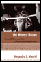

Studies in Latin American and Caribbean Music,
edited by Peter Manuel, aims to present interdisciplinary studies
in the traditional and contemporary musics of Latin America and
the Caribbean. |

|
Arsenio
Rodríguez and the Transnational Flows of Latin Popular Music
Garcia, David F. 224 pp • 6x9 • Spring 2006
paper 978-1-59213-386-4
cloth 978-1-59213-385-7
Excerpt available |
|
Salsa World
A Global Dance in Local Contexts
edited by Hutchinson, Sydney240 pp • 6x9 • Fall 2013
paper 978-1-4399-1007-8
cloth 978-1-4399-1006-1
|

|
Sounds of the Modern Nation
Music, Culture, and Ideas in Post-Revolutionary Mexico
Madrid, Alejandro L.224 pp • 5.5x8.25 • Fall 2008
cloth 978-1-59213-694-0
Excerpt available |

|
Creolizing Contradance in the Caribbean
edited by Manuel,Peter 288 pp • 6x9
• Spring 2009
paper 978-1-59213-735-0
cloth 978-1-59213-734-3
Excerpt available |

|
East
Indian Music in the West Indies
Tân-Singing, Chutney, and the Making of Indo-Caribbean Culture
Manuel, Peter 288 pp • 7x10 • Spring
2000
paper 978-1-56639-763-6
cloth 978-1-56639-762-9
Excerpt available |

|
Maya
Achi Marimba Music in Guatemala
Navarrete Pellicer, Sergio 288 pp • 6x9
• Spring 2005
paper 978-1-59213-292-8
cloth 978-1-59213-291-1
Excerpt available |

|
Música Norteña
Mexican Migrants Creating a Nation between Nations
Ragland, Cathy 268 pp • 6x9
• Spring 2009
paper 978-1-59213-747-3
cloth 978-1-59213-746-6
Excerpt available |

|
Drumming
for the Gods
The Life and Times of Felipe García Villamil, santero, palero,
and abakuá
Vélez, María Teresa 256 pp • 6x9 •
Fall 1999
paper 978-1-56639-731-5
cloth 978-1-56639-730-8
Excerpt available |

|
Sounding Salsa
Performing Popular Latin Dance Music in New York City
Washburne, Christopher 272 pp • 6x9 • Spring 2008
paper 978-1-59213-316-1
cloth 978-1-59213-315-4
Excerpt available |

|
Whose National Music?
Identity, Mestizaje, and Migration in Ecuador
Wong, Ketty
268 pp • 6x9 • Spring 2012
cloth 978-1-4399-0057-4 |